"When Tony and Mindy shared their vision with us, we immediately said, 'We'll be your first guests!' After nineteen years as missionaries and plenty of transitions coming back to the States for furlough, we would jump at the opportunity to get away to a place where we could rest and regroup as a family, recharge spiritual batteries, and prepare for the road... What Tony and Mindy are offering to missionaries is essential for their families and ministries."Scott Hudgins Manna Worldwide — Director, Cross Cultural Training & Mobilization
Our Vision
Just as the Lord took time away from ministry, Cleft of the Rock Ranch provides a place of solitude for missionaries experiencing the day-to-day pressures of ministry. Ministry fatalities often occur as missionaries face crisis, burnout, transition, conflict, disillusionment, and loss of vision — often because their needs are overlooked and neglected by themselves and others. Cleft of the Rock Ranch exists to facilitate rest and healing so they can return to, or continue in, effective ministry.
Who We Are
Mindy and I (Tony) met in the Air Force in December 1989, married on March 30, 1990, and have three adult sons. After many years traveling the world and serving our country, we have settled in Central Arkansas where Cleft of the Rock Ranch sits on 59 secluded acres.
We are long-standing members of First Baptist Church in Vilonia, where I serve as a deacon and we both serve as youth leaders, teaching Sunday School and small groups on Wednesday nights.
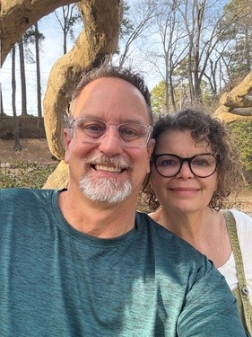
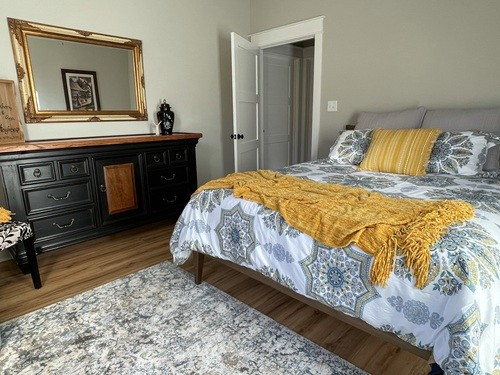
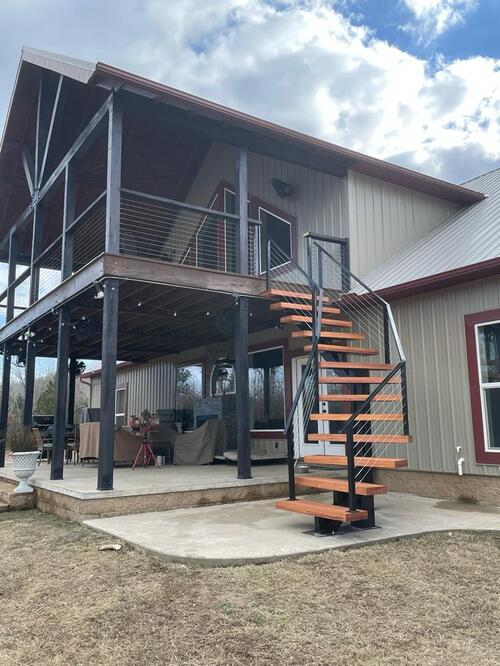
What We Have
The Hospitality House
Our home is large and spacious — a gathering place for meals, fellowship, and genuine rest. The main floor has 3 private bedrooms and 2 full bathrooms; two bedrooms have queen beds, and the third has two twin trundle beds.
The loft has wonderful sleeping nooks: one queen bed nook and a bunk bed nook (full on bottom, twin on top). The library window seat also converts to a twin bed. A half bath is in the loft area. The Hospitality House comfortably accommodates most families, large or small.
The Little Big House
Tiny on the outside, spacious inside — our fully furnished one-bedroom, one-bath bungalow with an open kitchen layout. The futon in the living room provides an extra sleeping option. Perfect for small families of 3 or less.
Counseling Network
In addition to providing rest, we have built a network of Christian counselors offering support for family, marriage, trauma, pastoral care, or transition out of ministry. All counseling is offered free of charge to missionaries, funded through COTRR donations.
In His Service,
Tony and Mindy
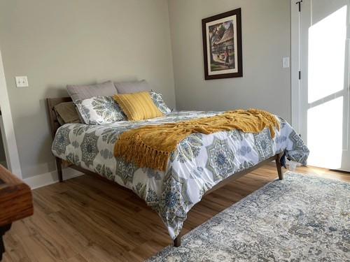
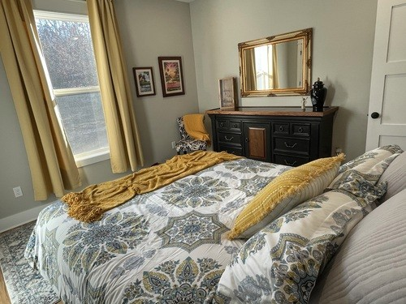
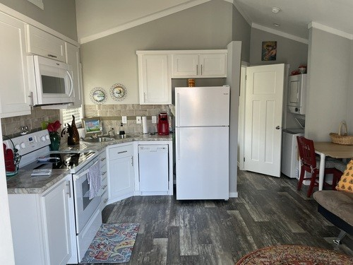
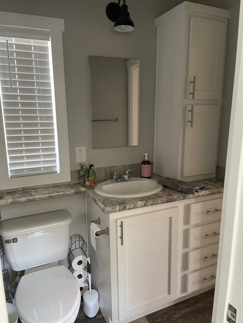
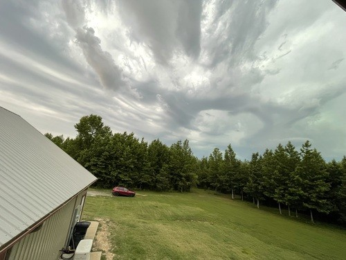
The Property
59 secluded acres in Central Arkansas — a true refuge.
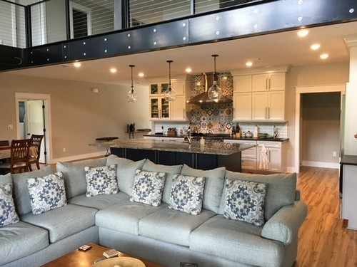
Hospitality House
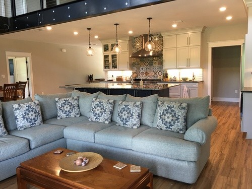
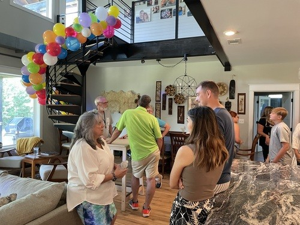
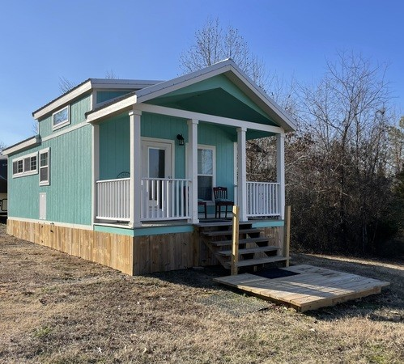
Little Big House
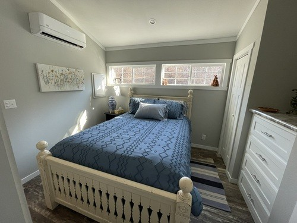
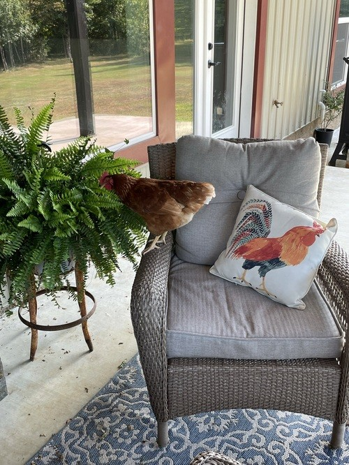
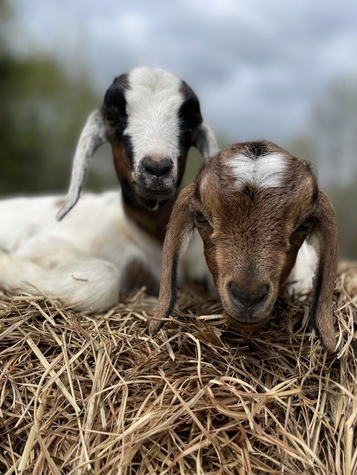
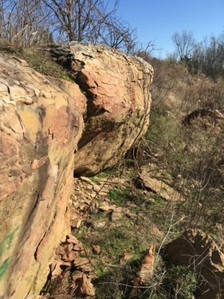
Actual Cleft of the Rock
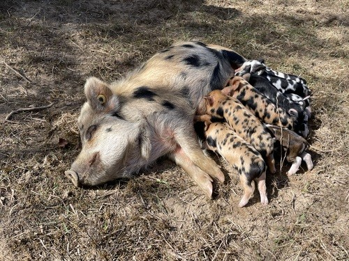
Missionary Testimonials
"While we were missionaries in Peru we sure could have used something like Cleft of the Rock Ranch. An out-of-the-way refuge nestled in God's wonderful creation — the perfect combination for missionaries who need to rest and recharge. I'm so excited about the many doors of ministry opportunities this will open for the staff of COTR to pour into the lives of missionaries. Tony and Mindy are dear friends who ministered to my family in our times of great need. I know they will do the same for all who pass through COTR. May God bless this ministry!"Brian Garrison Baptist Bible Fellowship International — Associate Mission Director